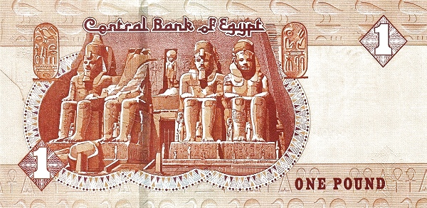

Египет - египетский фунт
50 пиастров
Лицевая сторона - мечеть аль-Азхар
Обратная сторона - фараон Рамсес II; предметы древнеегипетского искусства
1 фунт
Лицевая сторона - мечеть и мавзолей султана Каит-бея
Обратная сторона - храм Рамсеса II в Абу-Симбел
5 фунтов
Лицевая сторона - мечеть Ибн Тулуна
Обратная сторона - барельеф из гробницы фараона с изображением богатств долины реки Нил
10 фунтов
Лицевая сторона - мечеть ар-Рифаи
Обратная сторона - фрагмент статуи фараона Хафры (Хефрена)
100 фунтов
Лицевая сторона - мечеть султана Хасана>
Обратная сторона - голова сфинкса
200 фунтов
Лицевая сторона - мечеть Канибей
Обратная сторона - статуэтка писца